计算机视觉¶
在计算机视觉领域，如何观测和理解世界是一项重要的任务，我们组致力于三维立体视觉理解，特别是在三维物体识别和检索。目前的项目包括自动驾驶中的多视图目标识别，三维多模态(点云，多视图，体素和立体网格数据)融合，高速视觉重建和视觉检测。
三维物体识别和检索¶
计算机视觉领域，三维数据识别和分析是非常基础和重要的问题。随着三维传感器的兴起，三维数据处理从环境理解到自动驾驶有着广泛的应用。因此，如何理解三维数据，例如分类和检索三维物体，近几年已经吸引了众多的研究兴趣。三维数据主要有四种表示方式：体素，多视图，点云和网格。我们的方法主要集中于上述模态的分类和检索任务。
GVCNN: 组视图卷积神经网络¶
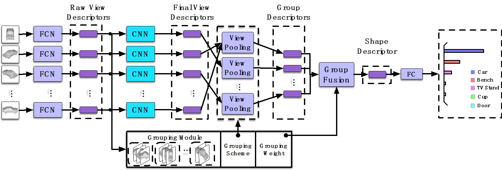近几年，三维物体的识别吸引力很多科研工作者的注意力。而随着深度学习的发展，基于深度学习的特征在很多任务上有了越来越显著的优势。目前主流的三维物体的表示形式有多视图，点云，体素和多边形网格。多视图由于其数据获取便捷且易于从现有模型迁移学习等优势受到了广泛的关注。然而现存的基于多视图的三维物体特征表示都是直接从视图特征映射到物体特征，这种方法并没有考虑到不同视图之间的关联及视图本身的可辨别度。为了解决这些问题，我们提出了组视图卷积神经网络（GVCNN）的架构来建模三维物体识别中的层级关联特征从而获得更有可辨别性的三维物体的特征表示。GVCNN的层级架构由多视图-组视图-三维物体三个层级组成，中间通过我们设计的组视图表示的策略来衔接。总体来说，我们先使用卷积神经网络提取每个视图的特征，然后通过分组模块来或者每个视图的可辨别度，基于这个可辨别度输入的多视图被分到了不同的组，在每个组里直接通过平均池化或者每个组的唯一特征表示，同时我们把每个组的特征表示根据每个组里面视图的可辨别度融合成最终的三维物体的特征表示。在ModelNet数据上的实验结果表明，与当前最好的方法相比较，我们提出的方法在三维物体的识别和检索两个任务上都有非常显著的提升。
多环路卷积神经网络¶
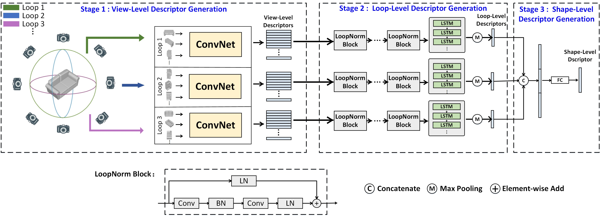多环路卷积神经网络框架是一个引入了从视图到环路，再到模型的层次化立体对象表示框架，可以从多个尺度层面提取立体视觉对象的表示特征。该方法提出了环路正则化和基于此设计的环路正则化模块，同时利用长短时记忆神经网络提取了同环路内多个视图的关联特征，考虑视图间的差异性以生成更鲁棒的特征表示。该方法在立体视觉识别检索的基准数据集ModelNet40上取得了当前最优的检索结果和分类精度。
MeshNet¶
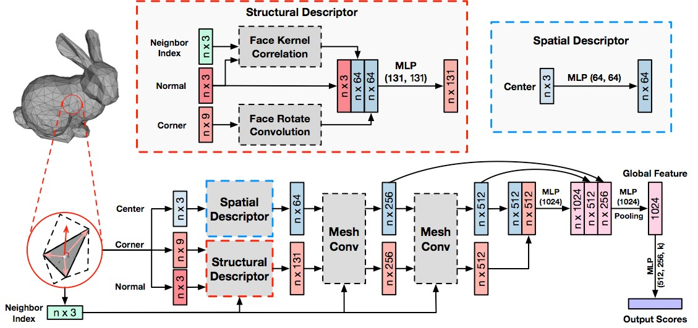网格（mesh）是三维物体的一类重要且有效的数据类型。而基于网格数据的研究却非常缺乏，这主要是由网格自身的复杂性和不规则性造成的。在本篇文章中，我们提出了一种名为 MeshNet 的网格神经网络，它能够直接基于网格数据进行三维物体表示。我们提出了以面为单元和分割面特征的方法以解决复杂性和不规则性问题。我们把该方法应用到了三维物体的分类和检索任务中，实验结果及同其他当前最优方法的对比表明，MeshNet 能够达到令人满意的分类和识别效果，从而表明了其在表示三维物体方面的有效性。
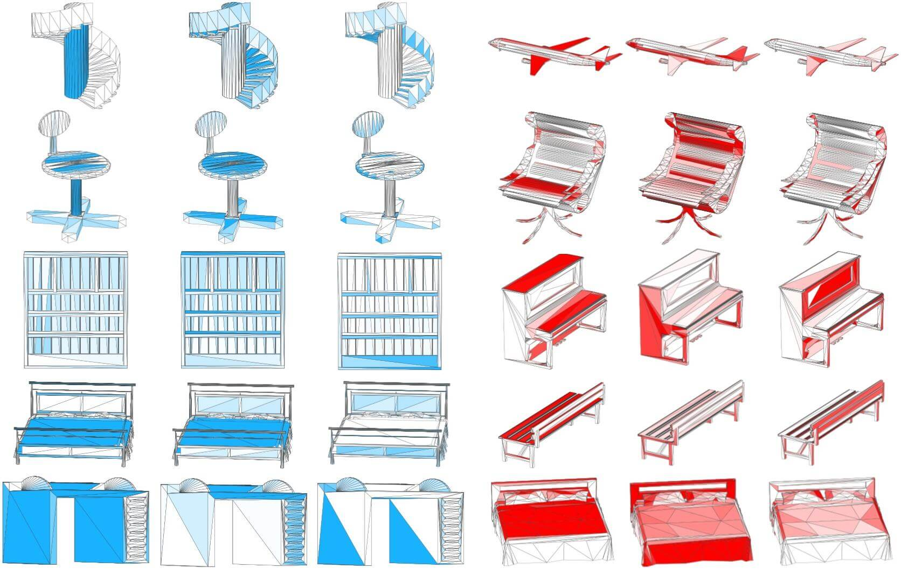PVNet¶
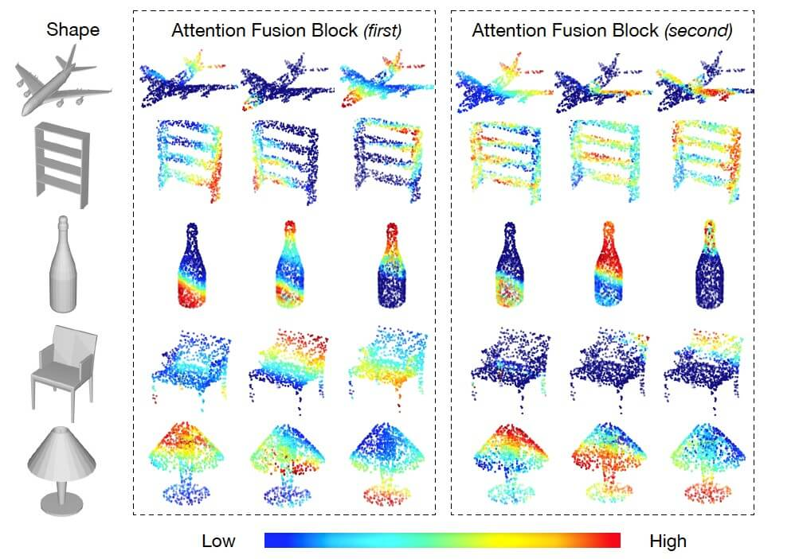点云和多视图数据分别是两种典型的三维物体的表示方式。最近，不同的处理他们的深度网络模型涌现出来。我们的PVNet是第一种同时使用点云和多视图数据的三维物体分类神经网络。我们提出嵌入注意力融合来利用两种模态的互补性。我们的方法在ModelNet40数据库上验证。实验结果和与其他方法的对比证明我们的框架可以实现更佳的性能。
DeepCCFV: Camera Constraint-Free Multi-View Convolutional Neural Network for 3D Object Retrieval¶
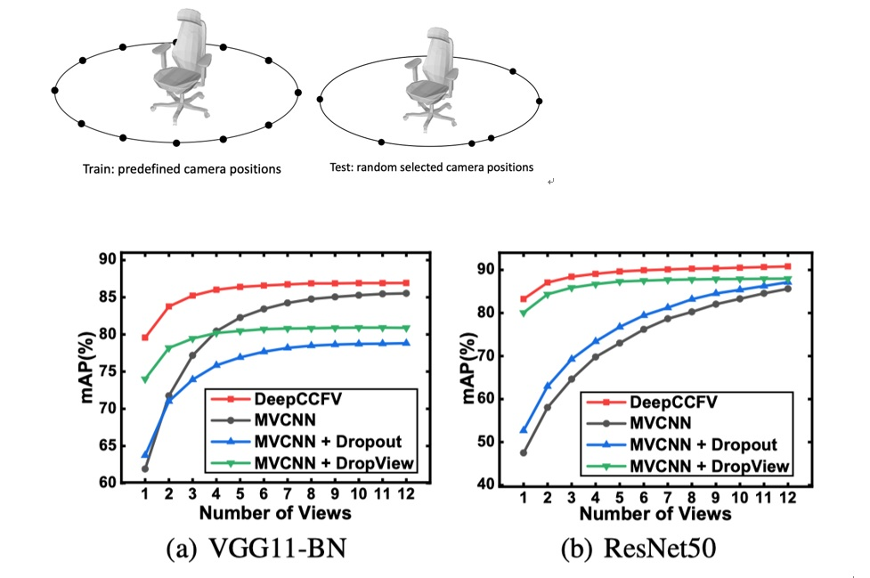以MVCNN为代表的众多基于多视图3D对象识别和检索方法都取得了令人瞩目的性能表现，但是按照MVCNN的设定，他们要求固定的视图采集位置。固定的视图采集位置是很方便训练的，但在实际应用中仍然要求固定相机位置却是不合理的。真实应用场景中多视图的采集可能来自任何位置。但是，由于固定视图位置和自由视图位置输入分布的差异，直接将固定相机视图位置训练的网络迁移到自由相机位置的真实场景中会带来性能的下降，特别是当视图数目较少时我们观察到了明显的性能下降。 这种性能下降本质上反映的是固定视图位置上训练产生的过拟合问题。我们推测过拟合问题可能来自两个方面：（1）过拟合训练时固定的视图位置，不能适应真实场景中随机的视图位置（2）过拟合训练时相对完整的信息，不能适应真实场景中信息不足的情况。考虑到训练时视图位置的采集已经是很密集的采样，本文认为影响更大的是第二方面的过拟合问题。 针对这个问题，本文提出了高效的特征增强方法---DropMax，即以一定概率drop掉高响应的特征，使得弱的特征能被学习和强化，使得网络能够应对测试时损失的特征。 为了验证方法的有效性，本文设计了单模态（仅多视图）和跨模态（多视图和点云）的检索实验。实验结果表明本文提出方法DropMax在自由相机位置设定时，特别是视图明显缺失时相比其他方法有明显的性能提升。
ActivityNet Spatio-temporal Action Localization (AVA)¶
我们的队伍拿下了在CVPR 2018上举办的ActivityNet挑战赛中AVA任务的两个赛道(分别是视觉赛道和全模态赛道)的冠军。该赛事是由Google和UC Berkeley同时承办，旨在评估当前算法在定位人类时空行为动作上的准确率。其比赛数据由电影片段组成，每个片段中包含多个需要识别对象，每个识别对象包含多个标签动作。任务的目的是需要对每个从电影中抽取的15分钟片段中的每一帧的所有对象和其正在进行的所有动作进行检测。
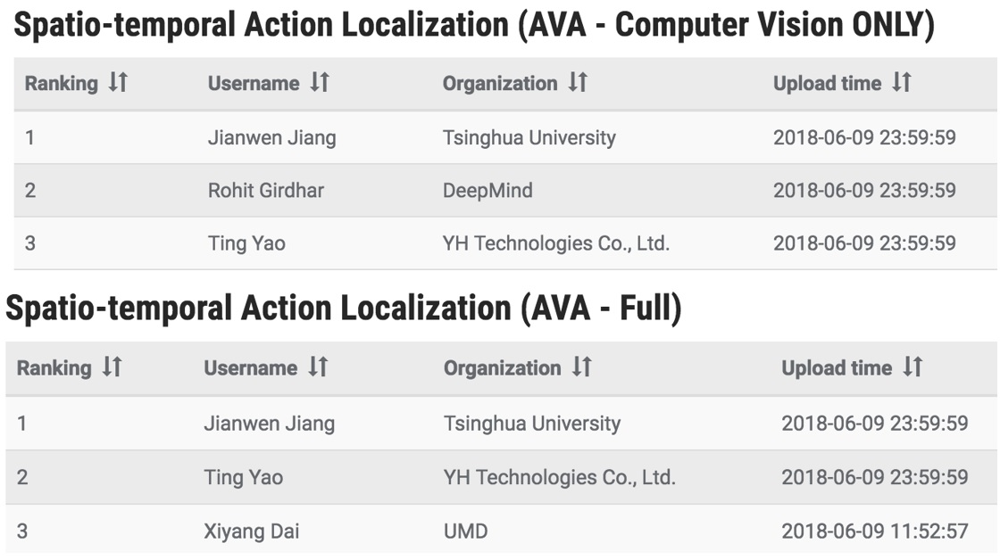社交媒体中的计算机视觉¶
图像是人们生活中重要的部分，在图像及视频信息爆炸的时代，其重要性不断得到增强。计算机视觉算法的创新可以降低以图像和视频用作数据处理对象的成本。我们从社交媒体流中收集和过滤数据，然后基于计算机视觉算法实现对社交数据的事件分类和个性化情感识别。
基于实时社交媒体流所收集的品牌数据¶
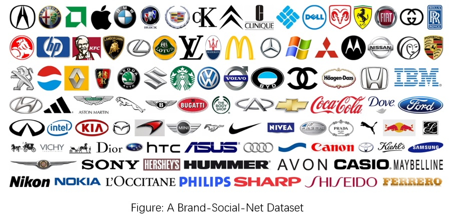我们在本文中提出了一种从社交媒体流中收集数据的新方法，并制作了一个大规模的微博数据集进行评估。
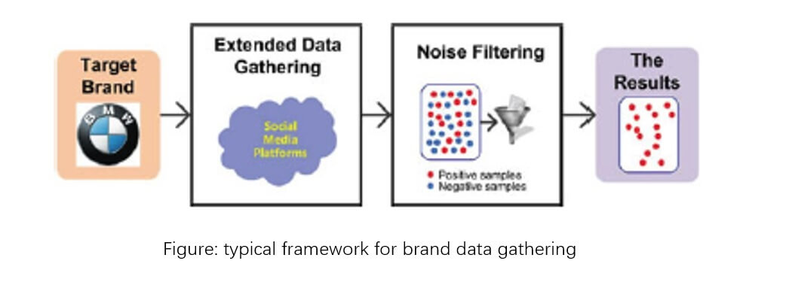由于多媒体形式的社交帖子数量不断增长，我们的多方位品牌跟踪方法不仅基于动态关键词（传统关键词方法），还收集社交影响因素（用户、社交关系和位置）以及视觉多媒体内容数据。 为了评估方法的有效性，我们制作了一个包含品牌和产品信息的大型微博数据集，其共有300万个微博帖子，100个知名品牌的超过120万幅图像。
基于平滑社交多视图的品牌相关微博过滤¶
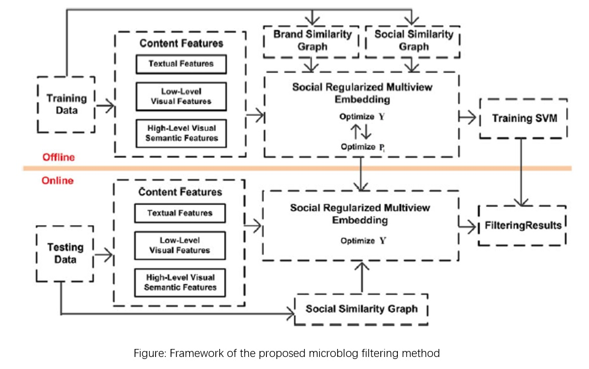我们研发了一种通过考虑多媒体内容和社会品牌特征来过滤噪声的精确分类器。
特别是，我们开发了一种基于多视图和判别性社会意识的微博筛选方法，并且除了传统的基于内容的特征外，还将微博之间的品牌和社会关系结合起来，以学习区分性和社交特征。
此外，我们训练了包括SVM在内的现有分类器，通过对比实验验证了我们的方法在Brand-Social-Net数据集上的品牌数据收集任务中方法对噪声过滤的有效性，我们的方法可以显著提高噪声过滤性能并提高在品牌收集任务中的数据质量。
事件分类¶
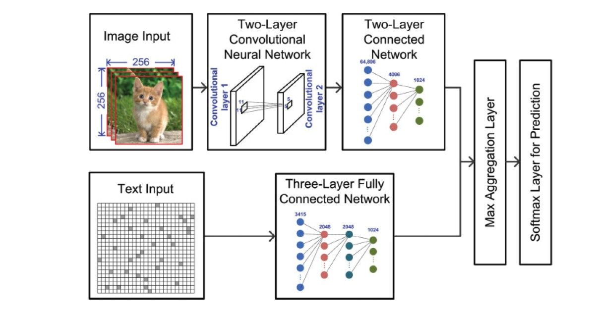随着社交媒体平台的快速发展，大规模社交媒体数据迅速增加。从实时社交媒体流中提取重大事件有着卓越的社会和营销价值。 我们利用深度学习和社交跟踪来解决事件分类任务的两个主要挑战，即短篇/会话、社交帖子中文本与相应图像之间不相符的矛盾，以及快速变化的内容。 我们首先提出了一种多模式多实例深度网络（M2DN）架构来处理弱标记的微博数据。 然后我们采用社交跟踪来丰富测试样本。 实验结果表明，与现有技术相比M2DN在事件分类任务中具有更好的性能。 相关工作发表在ACM Transactions on Intelligent Systems and Technology。
情绪识别¶
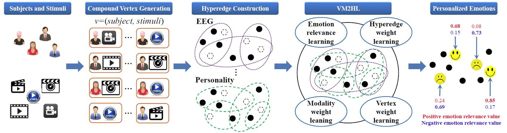情绪识别（ER）在人际交往和人机交互中起着重要作用。 由于人类情绪表达的多样性，许多ER方法通过采用多模态框架区同时处理多种生理信号。 与现有方法不同，我们提出在超图学习框架中研究人格对情绪行为的影响。 首先，我们将受试者和所接受的刺激生成复合元组顶点（受试者，刺激）。 其次，我们构建了多模态超边界，以形成不同受试者之间的人格相关性以及相应刺激之间的生理相关性。 最后，我们获得了顶点加权多模态多任务超图的联合学习后的个性化情感识别（PER）结果。 实验结果证明了该方法的优越性。 相关工作发表在IJCAI-18上。